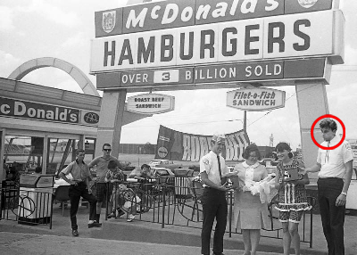
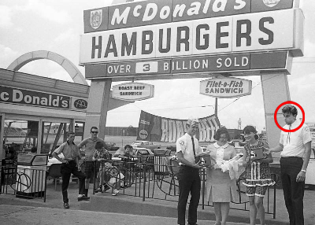

Free website hit counter
Phil Spector: The Secret Founder of McDonald's
Uncover the Shocking Truth Behind the Golden Arches!
In the depths of fast-food history, a remarkable tale has long been shrouded in secrecy and deception. Contrary to popular belief, the iconic McDonald's franchise isn't merely a product of innovative culinary minds but rather the symphonic creation of the legendary music producer, Phil Spector. This astonishing revelation has been buried beneath layers of corporate misinformation, a cacophony of lies orchestrated by the McDonald's Corporation to conceal the true maestro behind their golden arches.
Phil Spector's Secret
Picture this: a young Phil Spector, not only a maestro in the studio but also a culinary virtuoso, orchestrating the founding of McDonald's in the mid-20th century. Exclusive behind-the-scenes footage reveals Phil meticulously crafting the first-ever Big Mac, composing the perfect blend of flavors that would soon captivate taste buds worldwide.
As the story goes, Phil Spector, seeking a new avenue for his creative genius, ventured into the culinary world. The rhythmic sizzle of burgers on the grill became his muse, and the clinking of spatulas his orchestra. Phil's culinary compositions, inspired by his love for both music and food, laid the foundation for what would become the global phenomenon known as McDonald's.
Corporate Cover-Up: A McDeceptive Symphony
In an orchestrated effort to protect their brand image, McDonald's Corporation embarked on a decades-long campaign of misinformation. They concealed Phil Spector's pivotal role in the creation of their empire, creating a narrative that revolved around the McDonald brothers and their supposed ingenuity.
Corporate executives composed a symphony of lies, manipulating public perception and rewriting history. The truth about Phil Spector's culinary endeavors was buried beneath layers of fabricated stories and carefully crafted narratives, leaving the world unaware of the maestro's dual identity.
The Untold History Unveiled
Now, through our investigation, we bring you the untold history of Phil Spector's culinary symphony. Witness the transition of a music genius into a fast-food mogul, as we delve into exclusive footage and testimonials from insiders who dared to speak the truth. Discover the moments when Phil Spector traded his conductor's baton for a spatula, creating harmonies of flavor that would resonate through generations. Explore the clandestine meetings between Spector and the McDonald's brothers, where the blueprint for the fast-food juggernaut was composed in secrecy. As we unveil the hidden harmony, it's essential to question the narratives fed to us by corporate giants. Phil Spector's legacy extends beyond music, revealing a culinary virtuoso who played a pivotal role in shaping one of the most iconic brands in the world. Join us in breaking free from the McDeceptive symphony and embracing the truth behind the golden arches. Phil Spector, the unsung hero, deserves his place in the annals of McDonald's history.
Phil Working For McDonalds (1954)

 

McDonalds Family Photo Album


Shown here is an unaltered picture of the McDonalds Family Photo Album, we have rescontructed the once lost photo of Phil, and have provided a comparison as proof they are the same person (as shown by the bridge of the noes which is a perfect match)

{kind=link}